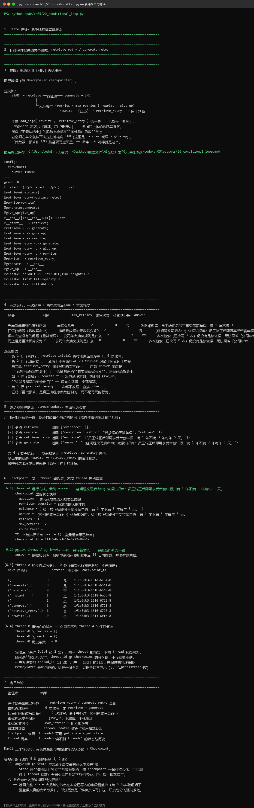
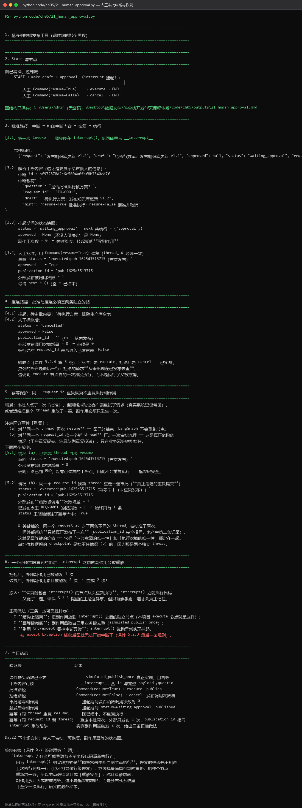
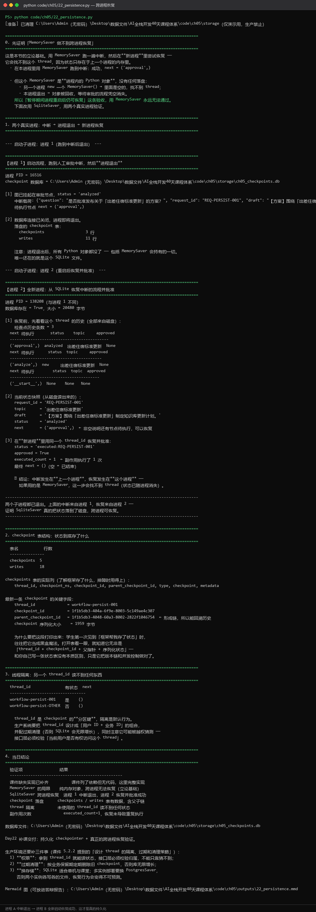

5.2.1 从线性图到条件图
先增加证据质量判断：足够则生成，不足则改写问题后再检索；最大重试次数写入 state。
⚠️ 本节需要两个新节点函数。原课件 v1.0 在下面的图定义里调用了 retrieve_retry 和 generate_retry，但全章从未定义它们 （5.1 节只有签名是 RagState 的 retrieve / generate）。 这是审校发现的阻断级缺陷 —— 学生照抄会在 add_node 处直接 NameError。 完整定义如下。
from typing import Literal, TypedDict
from langgraph.graph import END, START, StateGraph
class RetryState(TypedDict):
question: str
rewritten_question: str
evidence: list[str]
answer: str
retries: int
max_retries: int
# 复用第 3 章的检索器（依赖注入，不把解析/切块代码复制进来）
def retrieve_retry(state: RetryState) -> dict:
"""检索节点。注意：要优先使用改写后的问题。"""
# 若已经改写过问题，就用改写版；否则用原问题
query = state.get("rewritten_question") or state["question"]
rows = retriever.search(query, top_k=5)
return {"evidence": [row["text"] for row in rows]}
async def generate_retry(state: RetryState) -> dict:
"""生成节点：只依据证据回答，证据不足时明确拒答。"""
if not state["evidence"]:
return {"answer": "当前知识库中没有足够依据。"}
context = "\n\n".join(state["evidence"])
result = await llm.chat([
{"role": "system", "content": "只依据证据回答，依据不足时拒答。"},
{"role": "user", "content": f"证据：\n{context}\n\n问题：{state['question']}"},
])
return {"answer": result.text}
def route_after_retrieve(state: RetryState) -> Literal["generate", "rewrite", "give_up"]:
if state["evidence"]:
return "generate"
if state["retries"] < state["max_retries"]:
return "rewrite"
return "give_up"
def rewrite(state: RetryState) -> dict:
simplified = state["question"].replace("请问", "").strip()
return {"rewritten_question": simplified, "retries": state["retries"] + 1}
def give_up(state: RetryState) -> dict:
return {"answer": "多次检索仍没有足够依据。"}
注意 <code>generate_retry</code> 是 <code>async</code> 的（它调用异步 LLM 客户端）， 而其他节点是同步的。LangGraph 允许混用，但驱动方式有区别： 含异步节点的图要用 await graph.ainvoke(...) 或 async for ... in graph.astream(...)。 这一点在 5.5.4 节会再强调一次 —— 忘了加 await 是最常见的错误。
builder = StateGraph(RetryState)
builder.add_node("retrieve", retrieve_retry)
builder.add_node("rewrite", rewrite)
builder.add_node("generate", generate_retry)
builder.add_node("give_up", give_up)
builder.add_edge(START, "retrieve")
builder.add_conditional_edges(
"retrieve",
route_after_retrieve,
{"generate": "generate", "rewrite": "rewrite", "give_up": "give_up"},
)
builder.add_edge("rewrite", "retrieve")
builder.add_edge("generate", END)
builder.add_edge("give_up", END)
循环的安全边界仍由程序控制。max_retries 不能只写在提示词里。
运行验证：条件路由与可控循环：
python code/ch05/20_conditional_loop.py

这张图要把 5.2.2 新增的 <code>retrieve_retry</code> / <code>generate_retry</code> 两个节点真正跑起来看：
（1）同一张图，四条路由分支全部实测通过。 截图里的验收表给出四种情形的结果：
| 情形 | 行为 | 结果 |
|---|
| 首轮直命中 | 0 次改写，走 retrieve → generate | 正确 |
| 口语化问题 | 改写后命中，标注「经问题改写后命中」 | 正确 |
| 重试耗尽 | 走 give_up，不编造、不死循环 | 安全退出 |
| 上限为 0 | max_retries=0 时立即放弃 | 可控 |
注意第 3 行：重试耗尽后不是硬撑，而是安全退出。这正是「循环的安全边界由程序控制」的意思——max_retries 是代码里的整数，不是提示词里的一句话。
（2）循环次数可以从节点执行次数反推。 图上指出：4 个节点执行，而节点数多于 retrieve, generate 两个，多出来的就是 <code>rewrite</code> 与 <code>retrieve_retry</code> 的循环轮次。这句话的用处是：答辩时这张逐步日志就是「循环可控」的证据，而不是一句「我加了重试」。
（3）Checkpoint 的行为也在这一段被验证。 图上打印了 checkpoint 里的状态快照（question / rewritten_question / evidence / answer / retries / max_retries / route_taken），以及 next=() 表示已结束。另外还比较了同一 thread_id 再次 invoke 时的行为——只传新输入会被当作新的一轮。
图上有一条关于 stream updates 的实操建议：循环观察用 stream(stream_mode="updates") 逐步打印出循环轮次，这比只看最终 state 更能暴露"循环了几次、每次路由到哪里"。
Day22 上半场交付：带条件路由与可控循环的状态图 + Checkpoint。
关于内置 reducer（原课件缺失的讲解）： 你可能注意到 RetryState 用的是普通 TypedDict，节点返回的是部分字段， 而没返回的字段会保留原值——这是 LangGraph 的默认「覆盖」语义。 但有两个例外必须知道： 1. 列表字段的累积：如果希望某字段追加而不是覆盖（例如记录所有步骤、 累积消息），需要用 Annotated 加 reducer。写法是给字段加类型标注： ``python from typing import Annotated from langgraph.graph.message import add_messages class ChatState(TypedDict): messages: Annotated[list, add_messages] # 追加而不是覆盖 ` 2. 忘记 reducer 的后果：如果你想让消息累积却忘了加 add_messages， 每个节点只返回自己的新消息，之前的历史会被整个替换掉 —— 表现是"Agent 失忆"，而且很难从代码上看出问题。 判断方法：问自己「这个字段是替换语义还是累积语义」。 替换就用普通 TypedDict 字段，累积就用 Annotated` + reducer。
5.2.2 Checkpoint 与 thread_id
from langgraph.checkpoint.memory import InMemorySaver
# 注意命名：官方当前主推 InMemorySaver（同一模块里 MemorySaver 是它的旧名/别名，
# 网上大量教程用的是 MemorySaver）。本课程统一用 InMemorySaver。
checkpointer = InMemorySaver()
graph = builder.compile(checkpointer=checkpointer)
config = {"configurable": {"thread_id": "demo-001"}}
result = graph.invoke({
"question": "请问报销要求",
"rewritten_question": "",
"evidence": [],
"answer": "",
"retries": 0,
"max_retries": 2,
}, config=config)
Checkpoint 在每个步骤保存 state 快照，thread_id 指向一条运行历史。InMemorySaver 只适合课堂演示（进程退出即丢失）；生产系统应使用持久化 checkpointer（见 5.2.4），并设计 thread 的用户隔离、过期和清理策略。
<code>InMemorySaver</code> vs 持久化 checkpointer 的差别： | | InMemorySaver | SqliteSaver 等持久化方案 | |---|---|---| | 存储位置 | 进程内存 | 磁盘 / 数据库 | | 进程重启后 | 状态全部丢失 | 可恢复 | | 适用 | 课堂演示、单元测试 | 生产、需要断点续跑的任务 | 课堂上的演示技巧：先用 InMemorySaver 演示中断/恢复（快、无依赖）， 再故意把进程关掉，重新启动后尝试恢复 —— 学生会看到恢复失败。 这个失败演示比直接讲"应该用持久化"有效得多。 5.2.4 节给出持久化版本。
5.2.3 人工审批节点
from langgraph.types import Command, interrupt
class ApprovalState(TypedDict):
request: str
draft: str
approved: bool | None
status: str
def make_draft(state: ApprovalState) -> dict:
return {"draft": f"待执行方案：{state['request']}", "status": "waiting_approval"}
def approval(state: ApprovalState) -> Command[Literal["execute", "cancel"]]:
decision = interrupt({"question": "是否批准执行？", "draft": state["draft"]})
approved = bool(decision)
return Command(update={"approved": approved}, goto="execute" if approved else "cancel")
def execute(state: ApprovalState) -> dict:
return {"status": "executed"}
def cancel(state: ApprovalState) -> dict:
return {"status": "cancelled"}
approval_builder = StateGraph(ApprovalState)
approval_builder.add_node("make_draft", make_draft)
approval_builder.add_node("approval", approval)
approval_builder.add_node("execute", execute)
approval_builder.add_node("cancel", cancel)
approval_builder.add_edge(START, "make_draft")
approval_builder.add_edge("make_draft", "approval")
approval_builder.add_edge("execute", END)
approval_builder.add_edge("cancel", END)
approval_graph = approval_builder.compile(checkpointer=InMemorySaver())
config = {"configurable": {"thread_id": "approval-001"}}
paused = approval_graph.invoke(
{"request": "发布知识库更新", "draft": "", "approved": None, "status": "new"},
config=config,
)
resumed = approval_graph.invoke(Command(resume=True), config=config)
关键规则：
interrupt() 需要 checkpointer 和 thread_id。- 恢复时使用同一个 thread_id。
- 中断恢复后，包含
interrupt() 的节点会从头重新执行；中断前的副作用必须幂等。 - 不要用普通
try/except 吞掉框架用于中断的控制异常。 - 写操作应放在审批通过后的独立节点。
运行验证：人工审批与幂等
python code/ch05/21_human_approval.py

这张图里有本日最反直觉的一条实测结论，比验收通过更重要：
（1）两条路径都正确。 批准路径 Command(resume=True) → execute；拒绝路径 Command(resume=False) → cancel，而且拒绝时 <code>execute</code> 节点一次都没执行——图上强调了证据：「拒绝时的新息是最后一行，从未出现在已发布列表里」。这说明 execute 节点真的从未被调度，而不是"执行了又被撤销"。
（2）幂等保护：同一 <code>request_id</code> 重复恢复不重复执行副作用。 这里把「重复」分成两种，必须分开讨论：
| 情形 | 场景 | 结果 |
|---|
(a) 同一 thread 再次 resume | 图已结束，再次 resume | status='executed:pub-1625d3513715'，外部发布调用次数增量 0——框架层安全 |
(b) 同一 request_id 换新 thread 重走审批 | 用户重复提交 / 消息队列重复投递 | 重走审批两次，但外部只发布 1 次，publication_id 完全相同 |
图上的关键结论值得原样背下来：
同一个 <code>request_id</code> 走了两条不同的 thread、被批准了两次，但外部系统「只被真正发布了一次」（publication_id 完全相同，未产生第二条记录）。这就是幂等键的价值——它把「业务意图的唯一性」和「执行次数的唯一性」绑定在一起。单纯依赖框架的 checkpoint 是挡不住情况 (b) 的，因为那是两个独立 thread。
（3）一个必须亲眼看到的陷阱：<code>interrupt()</code> 之前的副作用会被重放。 实测数据：挂起后外部副作用已被触发 1 次，恢复后累计被触发 2 次 → 变成 2 次。原因写在图上：
恢复时包含 <code>interrupt()</code> 的节点从头重新执行，interrupt() 之前那行代码又跑了一遍。课件 5.2.3 提醒的正是这件事，但只有亲手跑一遍才会真正记住。
正确做法三条，按可靠性排序：
- 结构上隔离：把副作用放到
interrupt() 之后的独立节点（本项目的 execute 节点就是这样）； - 幂等键兜底：副作用函数自己用业务键去重（
simulated_publish_once）； - 别用 <code>try/except</code> 吞掉中断异常：
interrupt() 靠抛异常实现挂起，被 except Exception 捕获后图就无法正确中断了（课件 5.2.3 最后一条规则）。
Day22 下半场交付：带人工审批、可恢复、副作用幂等的状态图。
截图末尾的答辩题也值得提前准备：「interrupt 为什么可能导致节点前半段代码重新执行？」答案要点是——interrupt() 的实现方式是抛异常来中断当前节点执行，恢复时框架并不知道上次执行到哪一行（也不打算做行级恢复），它选择最简单可靠的策略：把整个节点重新跑一遍。所以节点必须设计成「重放安全」：纯计算放前面，副作用放后面或做成幂等。这不是框架的缺陷，而是分布式系统里「至少一次执行」语义的必然结果。
5.2.4 持久化 checkpointer：跨进程恢复
为什么必须讲这一节：原课件 v1.0 在依赖清单里列了 langgraph-checkpoint-sqlite， 但正文没有任何持久化代码，只在讲解里写了句"生产系统应使用"。 而 5.2.4 的验收标准第 4 条恰好要求"进程重启后仍可恢复"—— 用 InMemorySaver 是不可能通过这条验收的。这一节补上实现。
安装：
pip install langgraph-checkpoint-sqlite
用法（与 InMemorySaver 的接口完全一致，只换构造方式）：
import sqlite3
from pathlib import Path
from langgraph.checkpoint.sqlite import SqliteSaver
Path("storage").mkdir(parents=True, exist_ok=True)
conn = sqlite3.connect("storage/checkpoints.db", check_same_thread=False)
# SqliteSaver 与 InMemorySaver 是同一个 Checkpointer 接口的两个实现，
# 所以下面的代码与 5.2.2 完全一样 —— 这就是抽象的价值。
with SqliteSaver(conn) as checkpointer:
graph = approval_builder.compile(checkpointer=checkpointer)
config = {"configurable": {"thread_id": "approval-002"}}
# 停在中断点。（注意：字典字面量里不能写 "..." 占位符，
# 那会让它变成非法的 set/dict 混合语法 —— 这里必须给完整字段。）
graph.invoke(
{"request": "发布知识库更新", "draft": "", "approved": None, "status": "new"},
config=config,
)
# ← 此时把进程关掉，重新启动，checkpointer 换成同一个 db 文件
# graph.invoke(Command(resume=True), config=config) ← 仍能恢复
跨进程验证方法（这是本节的验收方式）：
# 进程 1：跑到中断点，然后退出
python code/ch05/22_persistence.py --start
# 进程 2：全新进程，从同一个 db 恢复
python code/ch05/22_persistence.py --resume
⚠️ 只在一个进程里验证恢复是无效的。 因为 InMemorySaver 在同一个进程里也能"恢复"——你无法证明它真的落盘了。 必须用两个独立进程，进程 2 启动时对进程 1 的内存一无所知。 这个原则和 Day19 的 SQLite 记忆验证是同一个：验证持久化，必须换进程。
运行验证：跨进程恢复：
python code/ch05/22_persistence.py --start # 进程 1：跑到中断点后退出
python code/ch05/22_persistence.py --resume # 进程 2：从同一个 db 恢复

这张图是本日最硬的一条证据——恢复发生在另一个进程里：
（1）跨进程恢复真的发生了。 终端明确标注：「两个子进程都已退出，上面的中断来自进程 1，恢复来自进程 2」，恢复后 approved=True、executed_count=1、最终 next=()（空，已结束）。这才是 SqliteSaver 与 MemorySaver 的分水岭：
中断发生在上一个进程，恢复发生在这个进程 —— 如果用的是 MemorySaver，这一步会找不到 thread（状态已随进程消失）。
（2）checkpoint 表结构——「框架帮你存了状态」不是黑盒魔法。 图上直接打印了 SQLite 里的表结构：checkpoints 5 行、writes 18 行，并列出 checkpoints 表的实际列（thread_id, checkpoint_ns, checkpoint_id, parent_checkpoint_id, type, checkpoint, metadata）。最新一条记录显示 parent_checkpoint_id 指向父记录——形成链，所以能回潮历史。
图上有一段话建议原样讲给学生：
学生第一次见到「框架帮我存了状态」时，往往把它当黑盒魔法。打开表看一眼就知道它无非是 [thread_id + checkpoint_id + 父指针 + 序列化状态] —— 和你自己写一张状态表没有本质区别，只是它把版本链和并发控制做对了。
（3）thread 隔离是默认行为。 图里对比了 workflow-persist-001（有状态）与 workflow-persist-OTHER（无状态）的差异：<code>thread_id</code> 是 checkpoint 的分区键。图上同时指出生产环境要补的三件事：权限（拿到 thread_id 就能读状态，接口层必须校验归属，不能只靠猜不到）、过期清理（按业务保留期删除，否则 SQLite 会无限增长）、换存储（多实例部署要换 PostgresSaver，否则两个实例各写各的文件，恢复行为会变得不可预测）。
验收表对应 5.2.5 的第 4 条：「SqliteSaver 跨进程恢复——进程 1 中断退出，进程 2 恢复并批准成功」。
生产环境的 checkpointer 选型：
| 方案 | 适用 |
|---|
InMemorySaver | 课堂演示、单元测试 |
SqliteSaver | 单机部署、中小规模 |
| Postgres / Redis checkpointer | 多实例部署（状态必须共享） |
选型的关键问题：「我的服务会跑几个实例？」 多实例时，同一个 thread 的请求可能落到不同实例上， 所以状态必须存在所有实例都能访问的地方。 这和 MCP 无状态化（第 6 章 Day27）要解决的是同一类问题—— 状态放在哪里，决定了你能怎么部署。
5.2.5 当日验收
- 空检索最多改写两次，然后拒答。
- 同一 thread 能恢复，不同 thread 状态隔离。
- 批准后走 execute，拒绝后走 cancel。
- 暂停期间进程重启后仍可恢复（用持久化 checkpointer，两个独立进程验证）。
- 重放审批流程不会重复产生外部副作用。